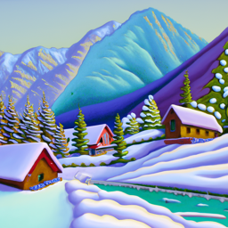
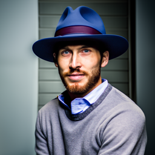
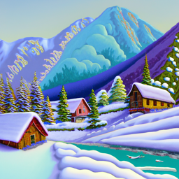
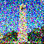
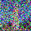
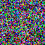

Berkeley Campanile
Noisy Campanile at t=250
Noisy Campanile at t=500
Noisy Campanile at t=750
This project is split into two parts with the first one covering usage of diffusion models and how to manipulate denoising processes to get results we want. The second part covers UNets and how to initialize their structure and models to denoise images.
DeepFloyd is a text-to-image model that generates images based on text prompts. The prompt "a high quality photo" is used as a neutral, unconditional input, allowing the model to generate random images without specific guidance.
This helps the model apply the diffusion process to transform noisy images into realistic ones. We also provide conditional inputs, which help determine the contents of the image that are generated.
For this project I used seed = 3898
The images below were generated, with their caption as their prompt and differing num_inferences.
Stage 1 with num_inference_steps=20:
|
an oil painting of a snowy mountain village |
a man wearing a hat |
a rocket ship |
Stage 2 with num_inference_steps=20:
|

an oil painting of a snowy mountain village |

a man wearing a hat |
a rocket ship |
Stage 1 with num_inference_steps=10:
|
an oil painting of a snowy mountain village |
a man wearing a hat |
a rocket ship |
Stage 1 with num_inference_steps=30:
|

an oil painting of a snowy mountain village |
a man wearing a hat |
a rocket ship |
It is worth mentioning that every image has been upscaled to 256x256 when every stage 1 output is actually 64x64. For later parts of this project, all outputs will be originally 64x64.
When num_inference_steps increases, the edges become more defined and the finer details can be made out. When num_inference_steps is lower, there is largely more visible amount of blurring.
In a diffusion model, we can start with a clean image and progressively add noise over time until it becomes pure noise. The model reverses this process by predicting and removing the noise, gradually denoising the image.
We can also generate images, by starting with pure noise and iteratively removing it, refining the image step by step until a clean image appears. We can manipulate the amount of noise that is added to each step.
The forward process entails of noising an image from a Gaussian distribution with a specific mean and variance at each timestep.
The variable alphas_cumprod tracks the noise level, where smaller t values correspond to cleaner images, and larger t values indicate more noise.
The function forward(im, t) depicts the image im at step t.
|
Berkeley Campanile |

Noisy Campanile at t=250 |

Noisy Campanile at t=500 |

Noisy Campanile at t=750 |